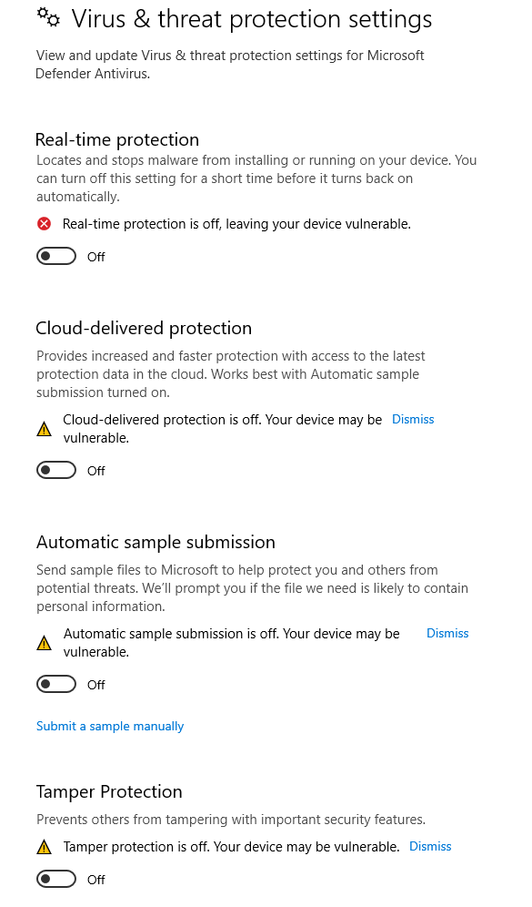

#
Scenario Infrastructure
We hope to capture the general structure of what is reported to have been seen being used by Blind Eagle.
The requirements described herein should be considered a bare minimum to execute the scenario. If you have the time and resources to remain true-to-form, you may elect to stand up multiple of each of these servers, non-contiguous IP space, etc. If you are not concerned with emulating Blind Eagle to this degree, this level of effort is not necessary. You could for instance, phish, serve payload, and act on objectives on a single server.
#
Network Diagram
Below are the domains and infrastructure used to support the setup and execution of the Blind Eagle Emulation plan.
#
Emulation Team Infrastructure
This emulation leveraged the following attacker infrastructure with configurations.
#
A note about payloads
- This evaluation utilizes payloads that model malware previously used by Blind Eagle.
- These utilities include loaders, injectors, and implants.
- The Binaries.zip contains all executables in one zip file for easy download. The password is
malware.- Implants are configured to connect back to static IP address 192.168.0.4. Build instructions for each payload can be found with source code in their respective directories.
#
Windows Attack Platform Setup \ 192.168.0.4
RDP to your Windows Attack Platform
Open Windows Defender and toggle all of the knobs to the off position - this is so that Defender will not eat your malware

Open a PowerShell Prompt and download the Blind Eagle ATTACK Evaluations Library to your chosen directory on your Windows attack machine
git clone https://github.com/center-for-threat-informed-defense/blackhat-2023-becoming-a-dark-knight-emulation- Open File Explorer and navigate to the repo directory
Resources\Binaries\.Right click -> Extract FilesonBinaries.zipand provide the passwordmalwarewhen prompted
#
Web Server Setup \ 192.168.0.5
SSH to the web server from either your machine or a separate PowerShell prompt on your Windows Attack Platform:
ssh ubuntu@192.168.0.5Download the Blind Eagle ATTACK Evaluations Library to the
/optfolder on your Linux Web Machinecd /opt/git clone https://github.com/center-for-threat-informed-defense/blackhat-2023-becoming-a-dark-knight-emulationcdto/opt/blackhat-2023-becoming-a-dark-knight-emulationand useunzip -P malware Resources/Binaries/Binaries.zipto extract payloadscd /opt/blackhat-2023-becoming-a-dark-knight-emulationunzip -P malware Resources/Binaries/Binaries.zipCreate a the following directories to host payloads from the attack users home directory:
mkdir -p ~/web/{rump,dll,notificaciones/contribuyentes/factura-228447578537}Use the Shell commands below to populate the binaries in the expected directories for the scenario:
cp Resources/Binaries/asy.txt ~/webcp Resources/Binaries/new_rump_vb.net.txt ~/web/dllcp Resources/Binaries/Rump.xls ~/web/rumpcp Resources/Binaries/factura-228447578537.pdf.uue ~/webcp Resources/Binaries/index.html ~/web/notificaciones/contribuyentes/factura-228447578537SCP the bancomurcielago website built using Django CMS to the victim Web server ❗ this will be used in a later configuration step
scp /opt/blackhat-2023-becoming-a-dark-knight-emulation/Resources/Binaries/django-cms-quickstart.zip ubuntu@10.1.0.4:/opt
#
Target Infrastructure
4 targets, all domain joined to the bancomurcielago domain:
#
Configure Domain Controller canario\ 10.1.0.10
Note: in the scenario, DNS records were manually created to emulate network activity from suspect domains If you wish to create DNS records the following will be useful for a complete emulation:
Create the user accounts as used in the scenario:
#
Configure Workstation desk1\ 10.1.0.7
RDP to the workstation from either your computer or the Windows Attack Machine:
Open Windows Defender, toggle all nobs to the off position - this is so that the malware can execute properly to completion If it is is useful to your organization to test defenses against this adversary you may choose to do this differently, however some tradecraft is likely to be blocked by modern EDR solutions (we hope)
#
Configure EWS Server mail\ 10.1.0.11
SSH to mail from either your computer or the Windows Attack Machine:
ssh ubuntu@10.1.0.11- Setup Exchange Server to host OWA and EAC.
- Create the "EWS Admins" group, adding
devadmin
#
Configure Web Server bancomurcielago-linux-srv3\ 10.1.0.4
Remove any prior Docker and Docker-Compose installations:
for pkg in docker.io docker-doc docker-compose podman-docker containerd runc; do sudo apt-get remove $pkg; doneInstall prerequisite packages:
sudo apt-get update sudo apt-get install ca-certificates curl gnupgSet up Docker APT repo:
# add gpg key sudo install -m 0755 -d /etc/apt/keyrings curl -fsSL https://download.docker.com/linux/ubuntu/gpg | sudo gpg --dearmor -o /etc/apt/keyrings/docker.gpg sudo chmod a+r /etc/apt/keyrings/docker.gpg # set up repo echo \ "deb [arch="$(dpkg --print-architecture)" signed-by=/etc/apt/keyrings/docker.gpg] https://download.docker.com/linux/ubuntu \ "$(. /etc/os-release && echo "$VERSION_CODENAME")" stable" | \ sudo tee /etc/apt/sources.list.d/docker.list > /dev/null # apt update sudo apt updateInstall Docker and Docker Compose:
sudo apt-get install docker-ce docker-ce-cli containerd.io docker-buildx-plugin docker-compose-plugin unzipunzip website built with Django CMS in
/opt/onbancomurcielago-linux-srv3unzip /opt/django-cms-quickstart.zipRun the website with Docker:
cd /opt/django-cms-quickstart sudo docker compose up -d
The bancomurcielago website should now be hosted on HTTP port 8000
#
Resources
The Binaries.zip contains all executables in one zip file for easy download. The password is malware. ❗ binaries in this folder will only work with the infrastructure configuration described in this document as some payloads need to be built with specific URLs hard coded.